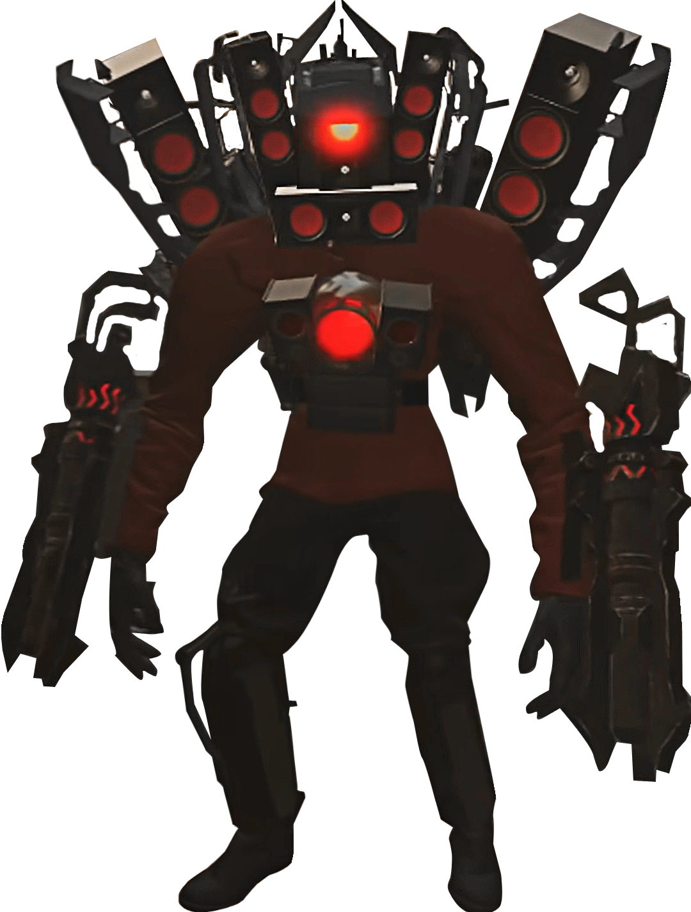
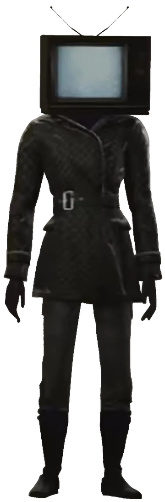

This is the offical Skibidi Toilet website
View the whole show here!!
Type of Skibidi Toilet creatures:
The OG Skibidi Toilet:
Camera Man:
Titan Speaker Man:

TV Woman:

Unoffical website with lore